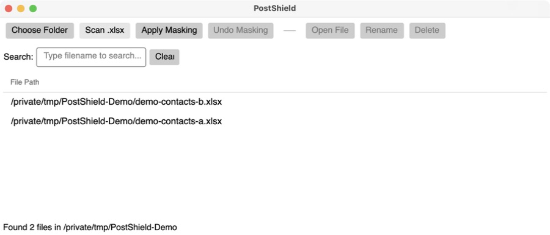

C# · AVALONIA · EPPLUS
PostShield


Sensitive-data masking application
A desktop application for Excel discovery, search, and configurable batch masking of sensitive customer data.
Built a C# desktop application using Avalonia and EPPlus to consolidate Excel discovery, search, and batch masking workflows, improving processing efficiency by 30%.
The processing pipeline supports XML-defined regex rules, masking templates, backup-based rollback, validation, logging, and exception handling, allowing data-protection rules to evolve without modifying the core application logic.